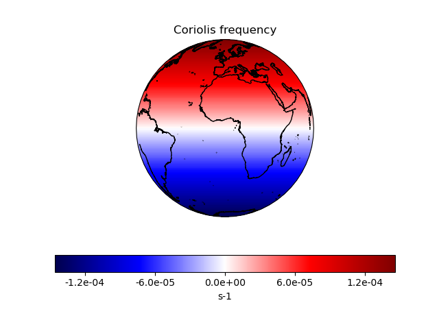

Note
Click here to download the full example code
Deriving the Coriolis frequency over the globe¶
This code computes the Coriolis frequency and stores it in a cube with associated metadata. It then plots the Coriolis frequency on an orthographic projection.
import cartopy.crs as ccrs
import matplotlib.pyplot as plt
import numpy as np
import iris
from iris.coord_systems import GeogCS
import iris.plot as iplt
def main():
# Start with arrays for latitudes and longitudes, with a given number of
# coordinates in the arrays.
coordinate_points = 200
longitudes = np.linspace(-180.0, 180.0, coordinate_points)
latitudes = np.linspace(-90.0, 90.0, coordinate_points)
lon2d, lat2d = np.meshgrid(longitudes, latitudes)
# Omega is the Earth's rotation rate, expressed in radians per second
omega = 7.29e-5
# The data for our cube is the Coriolis frequency,
# `f = 2 * omega * sin(phi)`, which is computed for each grid point over
# the globe from the 2-dimensional latitude array.
data = 2.0 * omega * np.sin(np.deg2rad(lat2d))
# We now need to define a coordinate system for the plot.
# Here we'll use GeogCS; 6371229 is the radius of the Earth in metres.
cs = GeogCS(6371229)
# The Iris coords module turns the latitude list into a coordinate array.
# Coords then applies an appropriate standard name and unit to it.
lat_coord = iris.coords.DimCoord(
latitudes, standard_name="latitude", units="degrees", coord_system=cs
)
# The above process is repeated for the longitude coordinates.
lon_coord = iris.coords.DimCoord(
longitudes, standard_name="longitude", units="degrees", coord_system=cs
)
# Now we add bounds to our latitude and longitude coordinates.
# We want simple, contiguous bounds for our regularly-spaced coordinate
# points so we use the guess_bounds() method of the coordinate. For more
# complex coordinates, we could derive and set the bounds manually.
lat_coord.guess_bounds()
lon_coord.guess_bounds()
# Now we input our data array into the cube.
new_cube = iris.cube.Cube(
data,
standard_name="coriolis_parameter",
units="s-1",
dim_coords_and_dims=[(lat_coord, 0), (lon_coord, 1)],
)
# Now let's plot our cube, along with coastlines, a title and an
# appropriately-labelled colour bar:
ax = plt.axes(projection=ccrs.Orthographic())
ax.coastlines(resolution="10m")
mesh = iplt.pcolormesh(new_cube, cmap="seismic")
tick_levels = [-0.00012, -0.00006, 0.0, 0.00006, 0.00012]
plt.colorbar(
mesh,
orientation="horizontal",
label="s-1",
ticks=tick_levels,
format="%.1e",
)
plt.title("Coriolis frequency")
plt.show()
if __name__ == "__main__":
main()
Total running time of the script: ( 0 minutes 2.343 seconds)